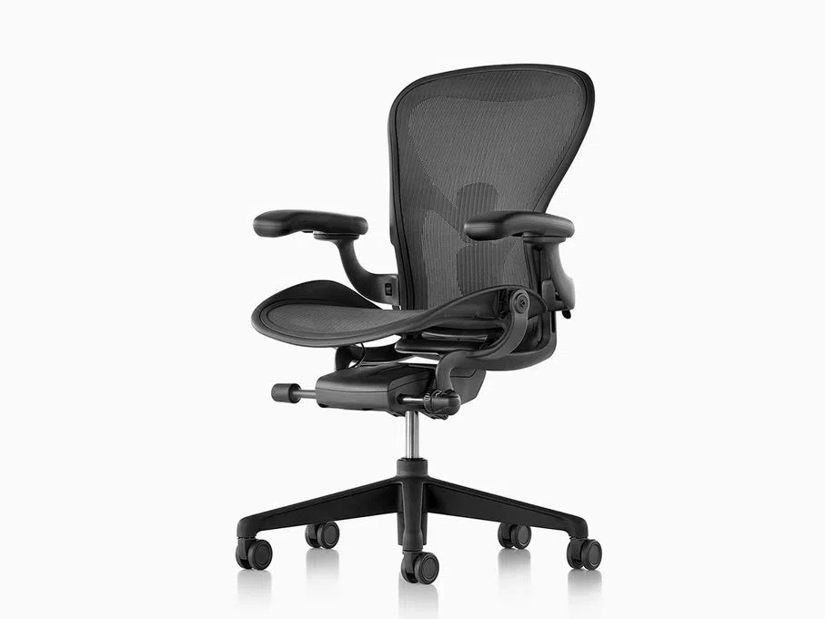

Biografia
Bem-vindo ao nosso site, seu destino número um para tudo sobre cadeiras ergonômicas! Somos apaixonados por criar espaços de trabalho saudáveis e confortáveis que promovam o bem-estar e a produtividade. Nosso objetivo é fornecer informações detalhadas e atualizadas sobre as melhores opções de cadeiras ergonômicas disponíveis no mercado, ajudando você a tomar decisões informadas para melhorar sua qualidade de vida no trabalho e em casa.
- Cadeira Vantum Gaming
- Cadeira Embody Gaming
- Cadeira Sayl Gaming
- Cadeira Aeron Gaming
Vantagens de comprar nossas cadeiras
- Conforto Superior: Projetada para oferecer suporte ergonômico ideal, garantindo conforto durante longas horas de uso.
- Ajustabilidade: Possui múltiplas opções de ajuste, como altura, inclinação, profundidade do assento, e apoio lombar, permitindo personalização para diferentes tipos de corpo.
- Design Moderno: Esteticamente agradável e elegante, complementando diversos estilos de decoração de escritório.